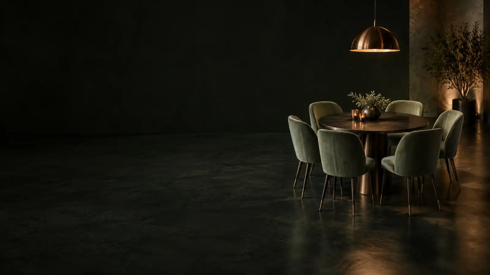
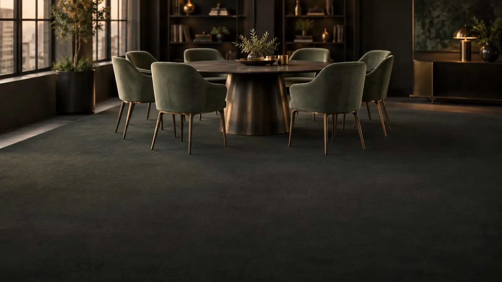
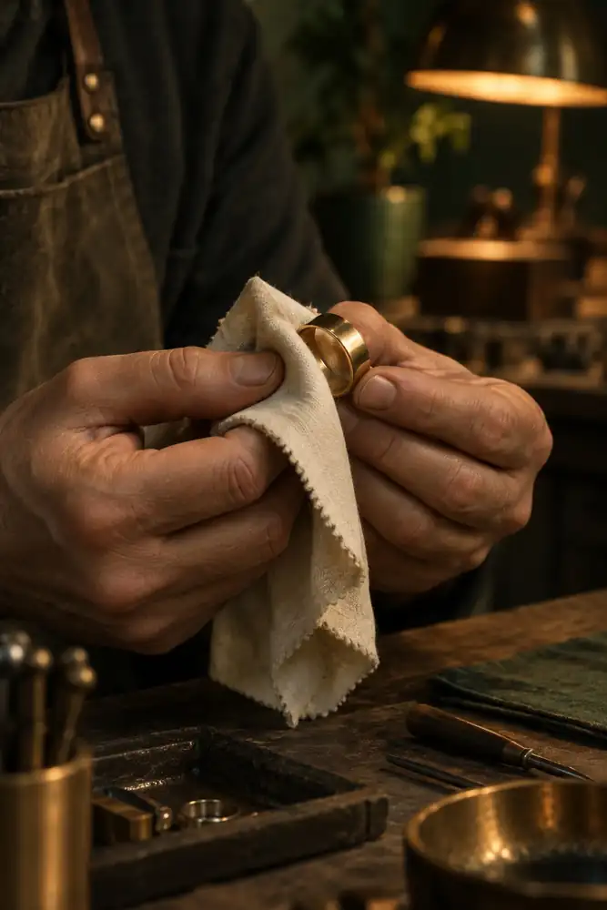

От личной эффективности к автономности · встреча 2 · 16 ноября 2026
Промпты
и навыки
Как ставить задачу ИИ.
И как упаковать метод в навык, который зовётся одной фразой.
Как ставить задачу ИИ.
И как упаковать метод в навык, который зовётся одной фразой.
Codex на ноутбуке: вход, настройки, персонализация, мастер-инструкция, папка workspace.
Персонализация сохранена, досье собрано, AGENTS.md лежит в корне workspace. Агент вас знает.
Архив ChatGPT ещё не в папке workspace. Переносим на встрече 3 вместе с GitHub.
Личный VPN на компьютер и телефон выдан 13 ноября.
Ссылка в Telegram или QR. Промпты копируются одной кнопкой.
Отзыв «сотрудник нагрубил»: от ответа клиенту до правила для всех 25 пунктов.
Разобрали приём и тут же делаем на вашей задаче.
chatgpt.com с VPN: навыки, плагины и расписание ставим там.
Начнём с самого слова.
В нём уже половина ответа.
Prompt по-английски:
подсказка.
В театре prompter это суфлёр: человек в будке у края сцены, который подсказывает актёру реплику. Актёр всё умеет. Суфлёр даёт ему, с чего начать.
Напиши ответ на плохой отзыв о нашем пункте выдачи.
Ты руководитель сервиса сети пунктов выдачи. Отзыв на одну звезду: сотрудник нагрубил, десять минут искал заказ, вечером в пункте был один человек. Ответ до 70 слов: признать, что поменяли, приглашение. Без шаблонных извинений и компенсаций.
«Как отвечать на отзывы?» Справка из интернета. Любой получит то же самое.
«Ответь на этот отзыв о моём пункте». Уже работа, но без ваших данных и без цели.
Роль, что случилось, кому ответ, формат, чего не делать. Результат, который можно публиковать.
Роль. Контекст. Задача.
Формат. Ограничения.
С чьей стороны смотреть: руководитель сервиса, юрист, финансист, методист
Ситуация, кому уйдёт результат, что уже было
Какой результат нужен на выходе
Таблица, письмо, пункты, до N слов
Чего не делать, чего не выдумывать
Задаёт угол зрения и словарь: юрист скажет одно, руководитель сервиса другое. Умнее модель она не делает.
Сколько пунктов, что случилось, кому уйдёт результат. Без него ответ для средней сети.
Один результат на выходе. Две задачи в одном промпте, обе выйдут наполовину.
Таблица, длина, тон, что не выдумывать. Экономит все круги правок.
Короткое сообщение в общий чат: что меняется, с какого дня, что сделать
Живой ответ клиенту, который читают и другие клиенты
Текст вакансии для hh.ru и короткая версия для чата дома
План первых трёх смен и чек-лист «готов работать один»
Два варианта ответа: мягче и строже
Твёрдое и вежливое письмо: просим не поднимать аренду
Пять правил, чтобы в чатах было видно задачи и ответы
Повестка на 40 минут и заготовка итогов
Дела по дням с учётом учёбы и объезда пунктов
Спокойное обращение со всеми фактами, чтобы штраф пересмотрели
Три формата праздника, когда пункты работают каждый день
Семь тем на стыке управления сетью и ИИ
40 промптов по формуле
под вашу сеть.
Понятный стандарт работы пункта, который новичок прочтёт за 10 минут
Чек-лист на одну страницу: начало и конец смены в пункте
Проверка пункта по баллам за 15 минут и что фотографировать
Что на фото не по стандарту в каждом пункте и что поправить первым · с файлом
Текст вакансии сотрудника пункта и 10 вопросов, которые покажут человека
План обучения по сменам: что узнать, что уметь, кто проверяет
График смен по пунктам и кто кого подменяет, без дыр
План разговора и фразы: спокойно, по делу, с договорённостью в конце
Спокойный ответ клиенту, который читают и другие клиенты
На что жалуются и что хвалят, по пунктам, и три действия на неделю
Что говорить клиенту в пяти частых конфликтах на выдаче
Короткое понятное объявление: график, переезд, ремонт
Что горит по каждому пункту и что ждёт моего ответа, на 2 минуты чтения
Задача с результатом, сроком и признаком «готово», который легко проверить
Закрыта задача или нет, доказательство из переписки и что спросить
Блок инструкций для ИИ в сводке, чтобы он не закрывал задачи чужим ответом
Короткий список показателей сети на неделю и как их считать
Рейтинг пунктов по деньгам и заказам и где разбираться · с файлом
Сколько заказов в день нужно пункту, чтобы выйти в ноль и в плюс
Десять мест, где сети пунктов теряют деньги, и что проверить у себя
Критерии места и вопросы, которые задать до подписания аренды
Таблица сравнения 2–3 помещений и какое брать
План разговора о ставке: аргументы, уступки, где остановиться
Вежливое и твёрдое письмо: ремонт, ставка или сроки
Что изменилось, что это значит для пунктов и что сказать сотрудникам
Обращение в поддержку: факты, доказательства, чёткая просьба
Суть претензии, что признать, что оспорить и черновик ответа · с файлом
Карта причин штрафов и пять правил для пунктов на месяц
Опасные для арендатора пункты договора и как их переписать · с файлом
Инструкция на две страницы: обязанности, права, за что отвечает
Деловое письмо по делу: подрядчику, поставщику, управляющей компании
Варианты оформления, 10 вопросов юристу и что взять с собой
Мои дела по кучкам: оставить себе, передать, автоматизировать, бросить
За, против, риски и что проверить до решения
Три цели на квартал, шаги по месяцам и кто отвечает
Кто за что отвечает, пока меня нет, и как мне каждый день быть в курсе
Дела по дням с учётом занятий, объезда пунктов и дороги
Суть за 5 минут, главные понятия и вопросы для самопроверки · с файлом
Тема по шагам на примерах моего бизнеса, с проверкой понимания
Дела до отъезда по дням, вещи, документы и что сделать по возвращении
Формула даёт первый ответ.
Приёмы доводят его до результата.

Совет → недостающая роль → разбор →
проверка цифр → чистовик → три адресата.
Видит только то, что реально сделать на этой неделе.
Мыслит годами: к чему это приведёт через год.
Ищет дыры. Обычно самый полезный из всех.
Юрист, специалист по сервису, финансист: подбирается под задачу.

Прагматик, стратег, скептик, профильный. Только что прошли всю цепочку с ними.
Вы назначаете, кто за столом: сотрудник пункта, постоянный клиент, юрист, менеджер маркетплейса.
Модель смотрит на задачу, собирает нужных специалистов и объясняет, почему выбрала каждого.
Понравился результат?
Извлеките способ его получить.
Свои сообщения сотрудникам · объявление, которое сработало · регламент для пунктов · отчёт без вопросов.
Ответы лучшего сотрудника клиентам · предложение, которое понравилось · письмо арендодателю, после которого договорились.
Договор со структурой, которая устраивает · презентация · картинка, которую хочется повторить.

Опишите, как выглядит хороший результат и где остановиться. Путь модель найдёт сама.
Сначала модель пишет, что будет считаться «готово» и что в задачу не входит. Вы говорите «поехали».
Каждое важное требование с причиной. «НИКОГДА» капслоком новые модели выполняют с перегибом.
Не «кратко» или «подробно», а для чего ответ и сколько читать.
Раз в несколько месяцев проверьте рабочий промпт вместе с моделью на противоречия.
Один промпт, один результат. Две задачи, обе наполовину.
Факты, выгрузка, пример результата. Файл скрепкой лучше пересказа.
Ответ ИИ это черновик. Цифры, имена и суммы сверяете вы.
Помнит всё, что выше. Продолжаем и ссылаемся на ответ.
Помнит ваше досье, но не задачу. Данные переносим явно.
Начинает забывать начало. Просим резюме и вставляем в новый чат. Промпт в шпаргалке.
Метод, который живёт постоянно
и зовётся одной фразой.
Одна просьба. Порядок шагов держите в голове и каждый раз копируете заново. Совет экспертов вы только что отправили шестью сообщениями.
Несколько шагов плюс правила. Ставится один раз, зовётся одной фразой в любом чате: «прогони через совет экспертов».
Шесть сообщений по очереди и порядок в голове.
«Прогони через совет экспертов».
Метод не теряется и одинаково работает в любом новом чате.
Архив в шпаргалке, распаковывать не нужно.
chatgpt.com, меню слева «Плагины» → вкладка «Навыки».
«Создать» → «Загрузить с компьютера» → архив.
В режиме «Работа»: @ и первые буквы названия. Или словами.
Спор экспертов, дыры, проверка цифр, чистовик, три адресата
Разбор недели по фактам и три приоритета на следующую
Повестка до совещания, протокол с задачами после
Подготовка к трудному разговору: план и фразы
Что отдать, кому и как проверить результат
«Сделай из этого навык». Он задаст вопросы и соберёт файл.
Готовый навык из тринадцати: берёт интервью и собирает SKILL.md из вашего метода.
«Навыки» → «Создать» → «Создать в редакторе».

Пропуск в ваши сервисы:
почта, календарь, диск.
Соединение с сервисом: вход в ваш аккаунт.
Что ChatGPT умеет с этим сервисом.
Готовые примеры на карточке плагина.
Меню слева «Плагины», поиск по названию, «Подключить».
«+» рядом с полем ввода → «Подключить».
Описали задачу, для которой нужен сервис, и он покажет нужный плагин.
Нужен плагин Gmail
Нужен плагин Gmail
Нужен плагин Gmail
Нужен плагин Google Календарь
Нужен плагин Google Календарь
Нужен плагин Google Календарь
Нужен плагин Google Диск
Нужен плагин Google Диск
Нужен плагин Google Диск
Нужен плагин Canva
Нужен плагин Canva
Нужен плагин Canva
Настоящий каталог открывается поиском по названию.
Блоки «Приложение» и «Возможности» и готовые сценарии.
Telegram-чаты пунктов плагином в ChatGPT не подключаются. Их ведёт Codex, это встреча 3.
Почта нужна и для задач по расписанию в блоке 4.
Один раз объяснили, что и когда.
Дальше приходит само.
Работает на серверах OpenAI. Компьютер можно выключить.
Уведомлением в ChatGPT, на телефон или письмом.
Задача с файлами вашего компьютера работает, только пока он включён.
Меню слева: вставили текст, отправили.
«Каждый будний день в 7:30 присылай…». Он сам создаст задачу.
Опишите, что хотите. Он предложит задачу и скажет, какие плагины подключить.
Встречи, дорога между районами, свободные окна
Какие письма горят, а какие подождут
Утро начинается со списка, а не с чатов
Напоминание и чек-лист: переписку вставляете вы
В пятницу видно, где на выходных некому работать
Готовое сообщение во все чаты про один стандарт
Что поменялось у маркетплейсов и на рынке
Штрафы и претензии со сроками ответа
Акты и претензии из папки: что горит
Неделя за 10 минут и три приоритета
Что платить, к чему готовиться, где перегруз
Один шаблон каждый месяц, месяцы можно сравнить
На Plus не больше пяти активных одновременно.
Приходит не секунда в секунду.
«Короче», «перенеси на девять». Пересоздавать не надо.
Проверьте текст обычным сообщением.
Ссылкой: человек ставит копию себе.
«Настройки» → «Уведомления».
Пять строк формулы, двенадцать приёмов, совет экспертов в шесть ходов.
Ответ на отзыв о любом из 25 пунктов, собрали сами.
Три стоят, ещё десять в шпаргалке. Совет зовётся одной фразой.
Сервисы подключены, первая задача приходит сама.
Промпт «ответ на отзыв» из практики 6 сделать навыком: четыре шага в шпаргалке или «Конструктор навыка».
Поставить из тринадцати те, что пригодятся, и позвать каждый на своей задаче.
Две-три задачи из библиотеки, неделю посмотреть, что приходит.
Скачанный архив положить в папку workspace: на встрече 3 разбираем его в Codex.
Шпаргалка остаётся у вас:
все промпты урока, навыки и библиотека.